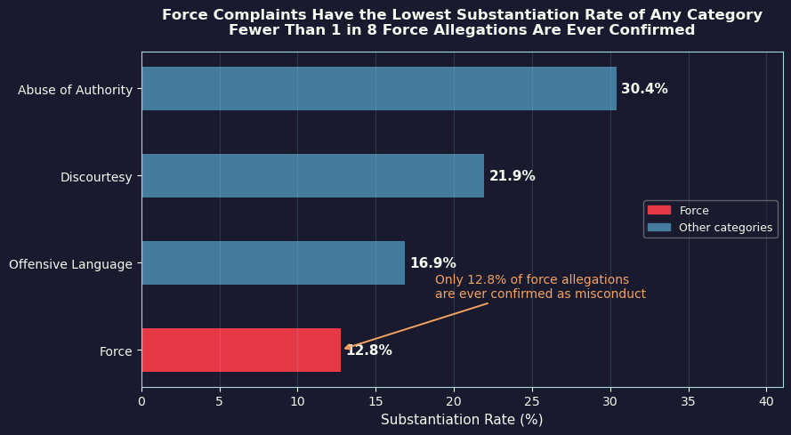
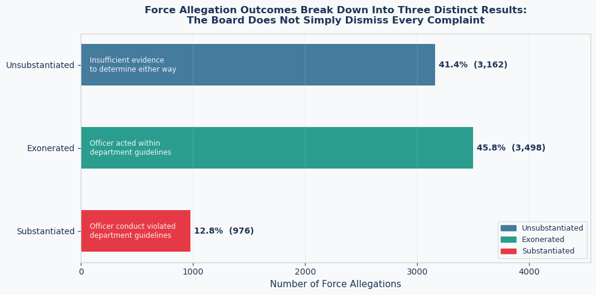

Proposition: Force complaints against NYPD officers are rarely substantiated, suggesting that the complaint review system may protect officers accused of using physical force.
FOR the Proposition

Design Decisions and Rationale:
- Score: -1.0 Categorical Isolation via Color Encoding: The Force category is rendered in a vivid, high-alert red while all other complaint types are collapsed into a uniform shade of muted blue. This creates a binary visual narrative where Force is the immediate outlier of the dataset. By using color to imply danger and abnormality, the visualization nudges the reader to view the 12.8 percent substantiation rate as evidence of potential systemic issues rather than a standard statistical variation.
- Score: -0.5 Impact-Oriented Sorting Order: The y-axis is sorted by descending substantiation rates, placing Force at the very bottom of the chart. This ensures the reader first encounters higher rates of accountability for minor offenses like Discourtesy or Abuse of Authority. When the eye finally reaches the Force bar, the sharp drop-off in percentage feels more dramatic and conclusive, effectively making it the punchline of the graphic.
- Score: 1.5 Frequency-Based Annotation: The text callout stating that fewer than 1 in 8 force allegations are ever confirmed as misconduct translates the abstract percentage into a tangible human frequency. While mathematically identical to the raw data, this translation makes the scarcity of substantiation more visceral and easier for the brain to process than a decimal value. It effectively bridges the gap between data and lived experience.
- Score: 0.0 High-Contrast Aesthetic Framing: Utilizing a dark theme with bright labels creates a sense of professional urgency and gravity. This stylistic choice emphasizes the clarity of the bars and ensures the red focal point is impossible to ignore. While the colors are striking, they do not distort the underlying geometry of the data, maintaining a level of structural integrity despite the persuasive intent.
AGAINST the Proposition

Design Decisions and Rationale:
- Score: -1.5 Embedded Interpretive Definitions: Explanatory text is placed directly inside the bars to pre-define the meaning of bureaucratic terms like Exonerated and Unsubstantiated. This choice may limit the reader’s interpretation by framing definitions in a specific way, specifically by defining Exonerated as the officer acting within department guidelines. This forces the reader to accept the board's judgment as a factual reality before they have a chance to question the criteria for such a finding.
- Score: 1.0 Granular Outcome Segmentation: Instead of a binary view of substantiated versus unsubstantiated cases, this chart splits the non-punitive results into distinct findings. Showing that nearly 46 percent of cases were officially exonerated suggests a functional and rigorous review process. This transformation shifts the focus from a lack of punishment to the presence of active oversight, countering the narrative of systemic protection.
- Score: -1.0 Thematic Counter-Narrative Titling: The title explicitly claims that the board does not simply dismiss every complaint, functioning as a direct rebuttal to common criticisms. It uses the chart as evidence for a thesis of diligence. By framing the data as a proof of competence, the visualization steers the reader away from skepticism and toward an acceptance of the NYPD review process as a legitimate system of checks and balances.
- Score: 0.5 Institutional Color Palette: The use of a clean white background combined with teal and navy tones mimics the aesthetic of an official government audit or an academic white paper. This increases the perceived authority and neutrality of the visualization. This choice leverages the reader's trust in institutional design to make the defensive narrative feel like an objective and dispassionate report.
Final Reflection
Constructing two diametrically opposed narratives from a single repository of civilian complaints highlighted the inherent flexibility of quantitative evidence. The most striking realization was how a statistic like a 12.8 percent substantiation rate can be transformed from a symbol of systemic failure into a mere fraction of a larger, more complex administrative workflow. One visualization relied on isolation and high-contrast warnings to provoke urgency. The other used institutional colors and granular categories to project a sense of order and fairness. This exercise proved that the architecture of a chart is just as influential as the numbers it contains.
Ethical visualization is defined by the degree of transparency provided to the observer. It is the responsibility of the designer to ensure that the visual shorthand used to simplify data does not also serve to obfuscate the truth. A persuasive choice remains acceptable when it emphasizes a real trend without resorting to the suppression of conflicting details or the manipulation of basic geometric conventions. Deception begins when the visual encoding is designed to prevent the reader from reaching any conclusion other than the one intended by the author. A designer should guide interpretation while still preserving the reader’s ability to critically evaluate and verify the data.